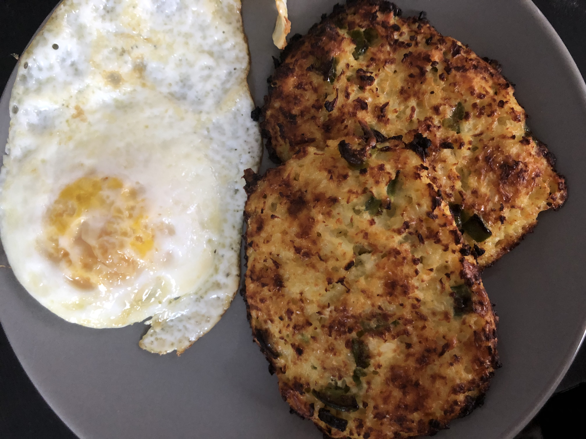

Keto Cauliflower Hash Browns

Description
Cauliflower, cheese, and bacon come together in this keto alternative to hash browns.
Nutritional Facts
Per Serving: 118 calories; protein 8.8g; carbohydrates 3g; fat 8.2g; cholesterol 54.1mg; sodium 484.1mg.
Ingredients
- 3 cups grated cauliflower
- 1 cup shredded Cheddar cheese
- 1 large egg
- ¼ cup real bacon bits
- 1 tablespoon diced chives
- ½ teaspoon salt
- ⅛ teaspoon ground black pepper
- 1 pinch cayenne pepper (Optional)
- cooking spray
Directions
- Preheat the oven to 400 degrees F (200 degrees C).
- Place grated cauliflower in a microwave-safe bowl. Cook on high for 2 minutes. Let cool for 5 minutes.
- Wring cauliflower in a clean dish towel, squeezing out as much moisture as possible. Transfer cauliflower to a large mixing bowl. Add Cheddar cheese, egg, bacon bits, chives, salt, pepper, and cayenne. Mix well.
- Spray a large baking sheet with cooking spray. Divide cauliflower mixture into 6 equal portions, making sure to leave space between each one. Flatten with your hands and shape into ovals.
- Bake in the preheated oven until browned, about 15 minutes. Turn broiler on low and broil until crispy, about 5 minutes. Let cool for 5 minutes to firm up.